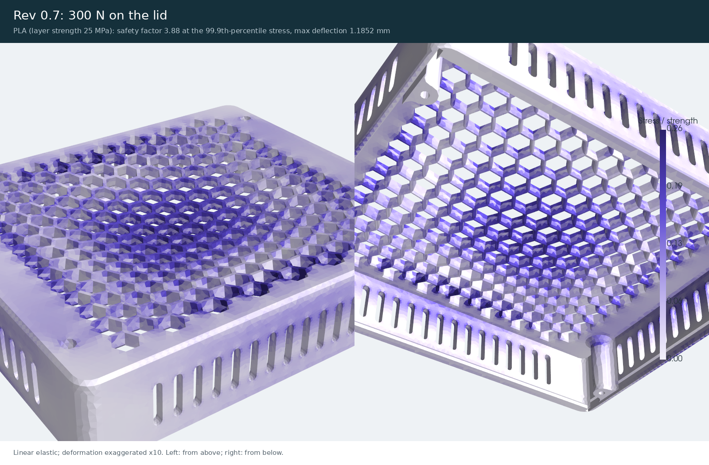
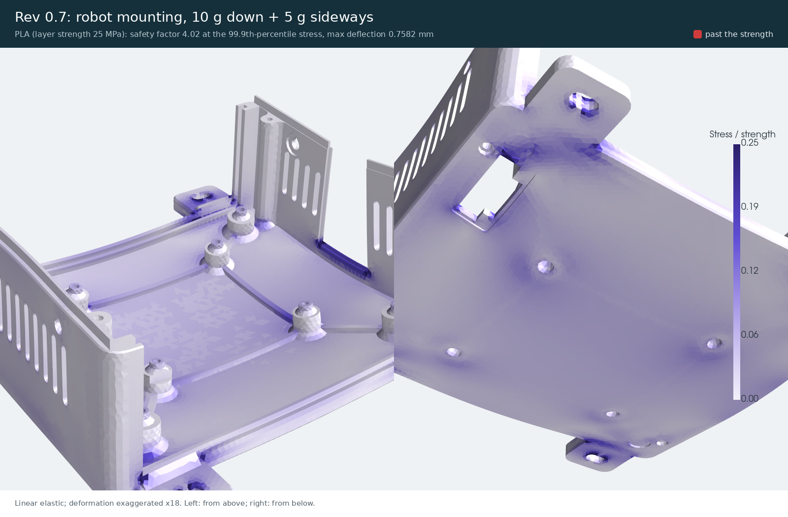
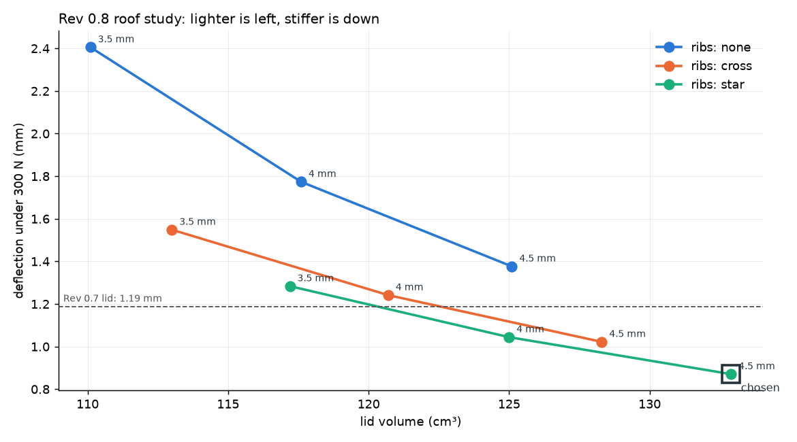
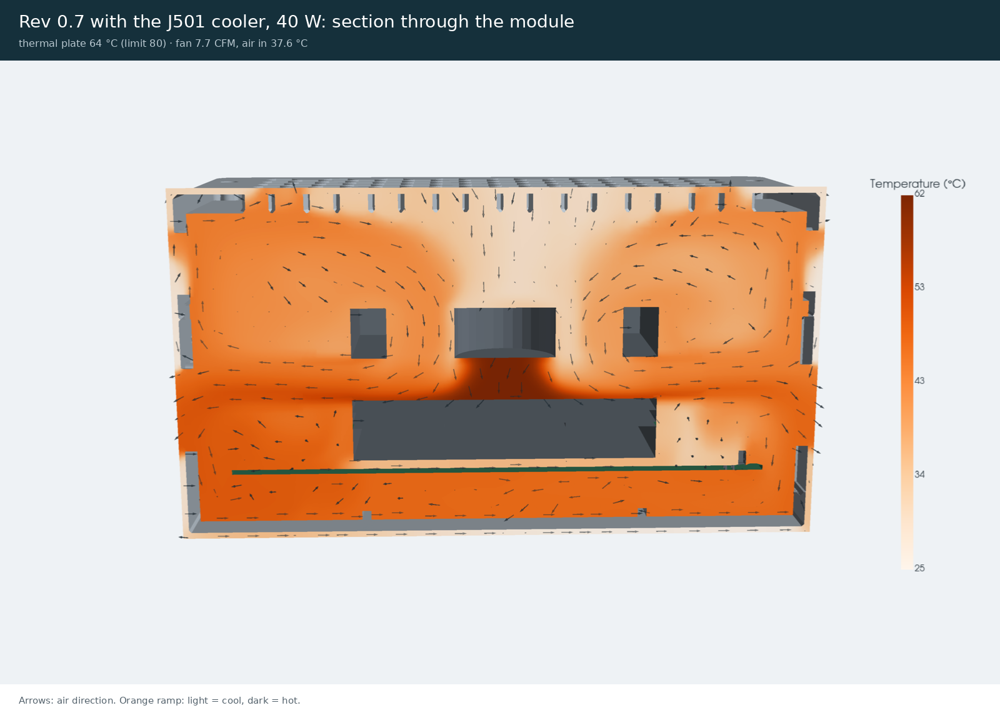
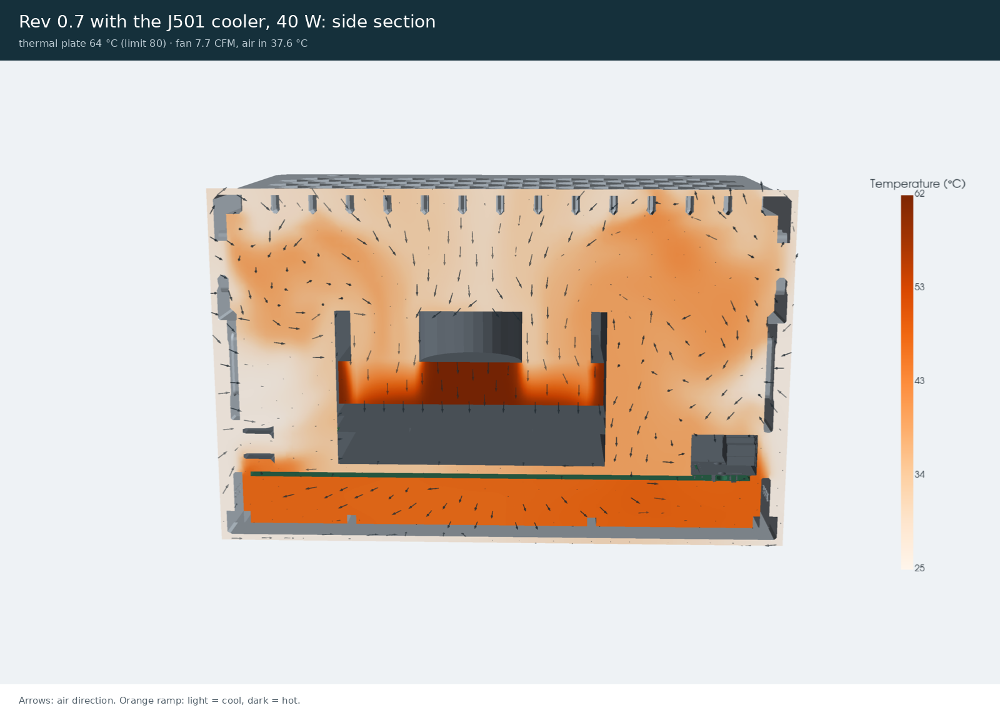
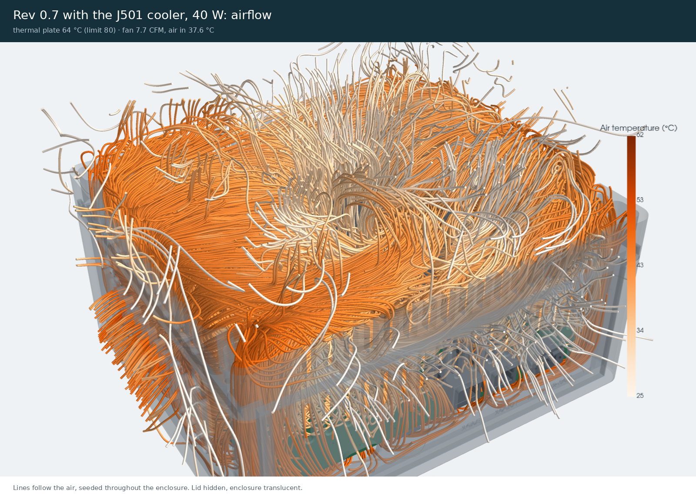
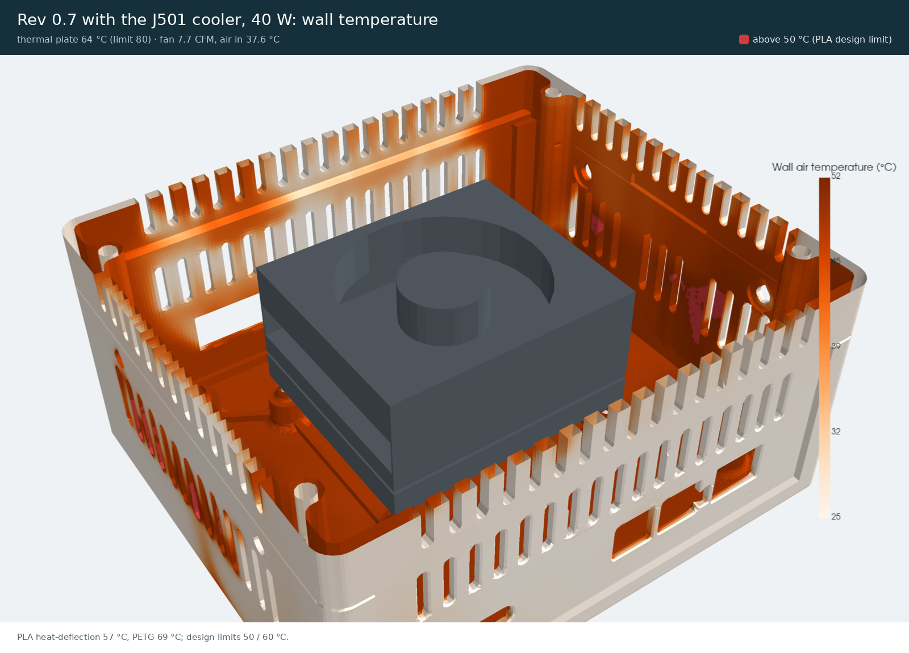

What changed in Rev 0.8
- Cooler size corrected to the Seeed WS-RDN-601 datasheet, 100 × 87 × 34 mm (the README's reference cooler). The old 110 × 100 × 50 mm envelope came from Seeed's reComputer mini J501 heatsink, a different product.
- Lid 20 mm tall instead of 40 (enclosure 92 mm high), roof 4.5 mm, with stiffening ribs where the roof study put them.
- Fan intake ring (D80 mm) from the roof to 2 mm above the cooler: the fan breathes room air through the hex cells inside the ring, and the hot exhaust leaves through the cells around it and the side vents.
- Floor vents where the floor topology study found no load path: less filament, and cool air in under the board.
Filament and print time
Measured with the Bambu Studio command line on a P1S (0.20mm Standard @BBL X1C, Bambu PLA Basic @BBL P1S 0.4 nozzle), the same profile for both revisions. These are the slicer's grams, not CAD volumes.
| Measure | Before | After | Change |
|---|---|---|---|
| Base (P1) | 196.3 g | 188.3 g | ▼ -8.0 (-4 %) · better |
| Lid (P2) | 164.4 g | 121.6 g | ▼ -42.8 (-26 %) · better |
| Front plate (P4) | 26.3 g | 26.3 g | = same |
| Rear plate (P5) | 25.4 g | 25.4 g | = same |
| Side hatch (P10) | 6.6 g | 6.6 g | = same |
| Enclosure total | 418.9 g | 368.0 g | ▼ -50.9 (-12 %) · better |
| Print time, all five parts | 13.09 h | 11.87 h | ▼ -1.22 (-9 %) · better |
Assumptions and limits
- Slicer estimates for one copy of each part with the stated profile; supports off unless the profile turns them on.
- One copy of each part; the plates are unchanged between revisions.
- Option: 10% gyroid infill on the Rev 0.8 base and lid gives 296.6 g (default profile 309.9 g). Not the default: the FEA models solid walls.
- Option: 3 walls, 8% gyroid infill on the Rev 0.8 base and lid gives 327.9 g (default profile 309.9 g). Not the default: the FEA models solid walls.
Strength and stiffness
Linear-elastic FEA (gmsh + scikit-fem, quadratic tetrahedra) on the printed shells, PLA with its layer-direction strength (25 MPa). The safety factor uses the 99.9th-percentile stress so one sharp corner (a mesh-dependent spike) does not decide it; the peak and where it is are in the JSON.
| Measure | Before | After | Change |
|---|---|---|---|
| 300 N on the lid: deflection | 1.19 mm | 0.76 mm | ▼ -0.42 (-36 %) · better |
| 300 N on the lid: stress, 99.9th percentile | 6.4 MPa | 9.9 MPa | ▲ +3.4 (+53 %) · worse |
| 300 N on the lid: safety factor (99.9th percentile) | 3.88 | 2.53 | ▼ -1.35 (-35 %) · worse |
| 300 N on the lid: stiffness | 927 N/mm | 1,288 N/mm | ▲ +361 (+39 %) · better |
| Robot mounting, 10 g down + 5 g sideways: deflection | 0.76 mm | 0.91 mm | ▲ +0.15 (+20 %) · worse |
| Robot mounting, 10 g down + 5 g sideways: stress, 99.9th percentile | 6.2 MPa | 6.7 MPa | ▲ +0.5 (+9 %) · worse |
| Robot mounting, 10 g down + 5 g sideways: safety factor (99.9th percentile) | 4.02 | 3.71 | ▼ -0.31 (-8 %) · worse |
| Robot mounting, 10 g down + 5 g sideways: stiffness | 507 N/mm | 449 N/mm | ▼ -58 (-11 %) · worse |






Assumptions and limits
- linear elastic, small deflection, isotropic (printed parts are weaker across layers: the layer strength is used)
- no contact, bolt preload, buckling or impact; sub-millimetre details (text, insert seats) are left out of the mesh
- radius fillets are meshed as 45-degree chamfers (slightly conservative)
Choosing the roof: a parametric sweep
Nine lids (roof 3.5 / 4 / 4.5 mm × no ribs, a cross, or the star the roof topology study suggested), each under the 300 N press. Acceptance, fixed before the sweep: deflection no worse than Rev 0.7 (1.19 mm) and a safety factor of at least 2. The lightest passing lid is the 4.5 mm roof with star ribs (132.9 cm³). In the final lid, the ribs run 1.5 mm into the walls and the ring (for a clean print mesh), which made it stiffer still (see Strength).
| Measure | Deflection | Change | |
|---|---|---|---|
| 3.5 mm roof, ribs: none 110.1 cm³, safety factor 1.29 | – mm | 2.41 mm | |
| 3.5 mm roof, ribs: cross 113.0 cm³, safety factor 1.27 | – mm | 1.55 mm | |
| 3.5 mm roof, ribs: star 117.2 cm³, safety factor 1.52 | – mm | 1.28 mm | |
| 4 mm roof, ribs: none 117.6 cm³, safety factor 1.63 | – mm | 1.77 mm | |
| 4 mm roof, ribs: cross 120.7 cm³, safety factor 1.54 | – mm | 1.24 mm | |
| 4 mm roof, ribs: star 125.0 cm³, safety factor 1.8 | – mm | 1.04 mm | |
| 4.5 mm roof, ribs: none 125.1 cm³, safety factor 1.91 | – mm | 1.38 mm | |
| 4.5 mm roof, ribs: cross 128.3 cm³, safety factor 1.82 | – mm | 1.02 mm | |
| 4.5 mm roof, ribs: star 132.9 cm³, safety factor 2.14 · passes | – mm | 0.87 mm |


Assumptions and limits
- each variant meshed at 3 mm with quadratic tetrahedra; the same load and supports as the Strength section
Starting point: the AGX module with no heatsink
The bare module in the Rev 0.7 enclosure, natural convection only (no fan), heat spread through the aluminium thermal plate. It shows why the cooler is not optional.
| Measure | Result | Change | |
|---|---|---|---|
| 15 W: SoC package (hottest) still rising when the run stopped (-86 % energy balance, 1200 iterations): the steady value is higher. | – °C | 151.5 °C | |
| 15 W: thermal plate (hottest) still rising when the run stopped (-86 % energy balance, 1200 iterations): the steady value is higher. Limit 80 °C. | – °C | 150.8 °C | |
| 40 W: SoC package (hottest) still rising when the run stopped (-84 % energy balance, 1200 iterations): the steady value is higher. | – °C | 344.6 °C | |
| 40 W: thermal plate (hottest) still rising when the run stopped (-84 % energy balance, 1200 iterations): the steady value is higher. Limit 80 °C. | – °C | 342.9 °C |


Assumptions and limits
- steady RANS (k-omega SST): natural-convection plumes really fluctuate
- no radiation: passive cases are pessimistic (radiation can carry a third of the heat from a hot plate in still air)
- walls use wall functions without prism layers, so wall heat transfer depends on the mesh: check a case one level finer before trusting a small difference
- converged means the temperatures, fan flow and heat leaving stopped changing and the heat leaving matches the heat put in (energy balance), not that the residuals reached a tolerance
- isotropic solids: heat pipes are an effective conductivity, with no dry-out limit
- obstacles (enclosure, boards) are adiabatic: the heat leaves only with the air
- fans are actuator discs with a straight-line fan curve, no swirl
With the J501 cooler (heat pipes, fins, 80 mm fan)
Seeed WS-RDN-601 cooler at 40 W in the enclosure on a table in 25 °C room air. The CFD resolves the enclosure, vents, intake ring and cooler shroud; the fan is an actuator disc on its datasheet curve; the thin stacked fins are a porous block whose resistance comes from the plate-fin model, which also gives the plate temperature at the CFD flow and intake air temperature.
| Measure | Before | After | Change |
|---|---|---|---|
| Thermal plate hot spot limit 80 °C | 63.8 °C | 57.2 °C | ▼ -6.6 (-10 %) · better |
| Air entering the fan room 25.0 °C; above it means hot air is being re-breathed | 37.6 °C | 32.1 °C | ▼ -5.5 (-15 %) · better |
| Fan flow 22.9 CFM free air | 7.69 CFM | 7.76 CFM | ▲ +0.07 (+1 %) · better |
| Hottest air in the enclosure | 61.8 °C | 55.1 °C | ▼ -6.6 (-11 %) · better |
| Heat the fins carry at this fin temperature fins at 61.78 / 55.14 °C; the module makes 40 W. More heat at the same fin temperature means better cooling. | 41.6 W | 40.5 W | ▼ -1.1 (-3 %) · worse |
| Fin calibration settled no: the fins still carry more (or less) than 40 W, so the plate value is an upper (or lower) bound | no | yes |










Assumptions and limits
- steady RANS (k-omega SST): natural-convection plumes really fluctuate
- no radiation: passive cases are pessimistic (radiation can carry a third of the heat from a hot plate in still air)
- walls use wall functions without prism layers, so wall heat transfer depends on the mesh: check a case one level finer before trusting a small difference
- converged means the temperatures, fan flow and heat leaving stopped changing and the heat leaving matches the heat put in (energy balance), not that the residuals reached a tolerance
- isotropic solids: heat pipes are an effective conductivity, with no dry-out limit
- obstacles (enclosure, boards) are adiabatic: the heat leaves only with the air
- fans are actuator discs with a straight-line fan curve, no swirl
- heat leaves the fin block evenly through its volume, so air in stagnant corners of the block runs hot (the mean temperatures and the fan flow are not affected)
- cooler internals (fin pitch, heat pipes, which faces exhaust) are assumed from the datasheet photo
Topology optimisation
pyMOTO: minimum compliance (stiffest layout) for a volume budget, SIMP with a density filter and an overhang filter for support-free printing, solved with MMA. Features that have a job (posts, columns, feet, joints) are kept solid; the optimiser decides the rest. The result is read into the parametric CAD, not printed directly.
| Measure | Result | Change | |
|---|---|---|---|
| floor: design region kept | – % | 35.0 % | |
| roof: design region kept | – % | 15.0 % |


Assumptions and limits
- linear elastic, 2 mm voxels, one load case per study
- a design guide: the CAD change is checked again with FEA
Heatsink study (for later)
The plate-fin model (cadagent.heatsink) swept over fin pitch and thickness on the cooler's own fan curve: each design finds its own fan operating point. With this fan, the assumed fin stack is already close to the best one, so a different fin stack would gain little. Feeding the fan cooler air, or a fan with more pressure, matters more.
| Measure | Assumed current | Best in the sweep | Change |
|---|---|---|---|
| Plate rise above intake air at 40 W best: 1.8 mm pitch, 0.2 mm fins | 12.8 K | 12.3 K | ▼ -0.5 (-4 %) · better |
| Fan flow on the fins alone | 11.2 m³/h | 12.5 m³/h | ▲ +1.3 (+11 %) · better |

Assumptions and limits
- Plate temperature rise above the air entering the fins, at 40 W, with the fan at its operating point on each fin stack. Same envelope (100 x 87 mm, fins 14 mm tall), same 3.5 mm heat-pipe base. Analytic model; confirm the pick in CFD.